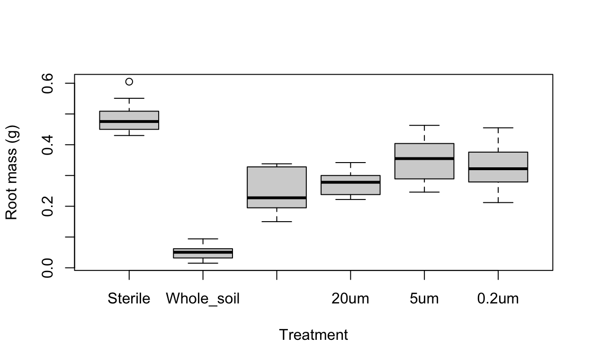
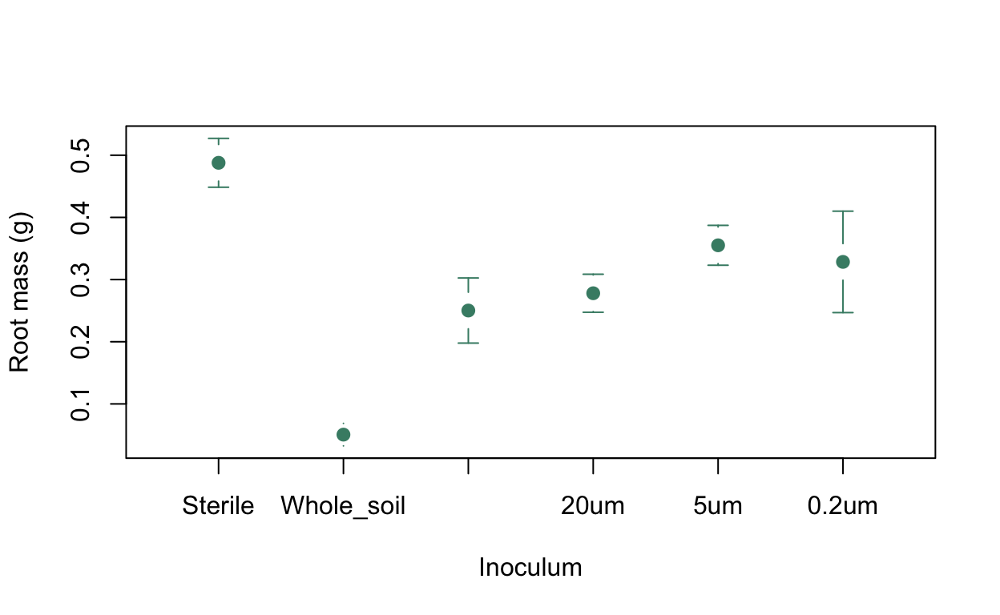

VIDEO
Let’s look at some example data. These come from a paper by Minggang Wang and coauthors published in the New Phytologist in 20181. Wang et al. were studying the phenomenon of plant-soil feedback (PSF) whereby aspects of plant biology are affected by the presence of other plants in the soil before the one in question. The study organism in this case is ragwort, Jacobea vulgaris, which is an important and toxic weed in arable fields in Europe and is also highly invasive in other parts of the world.
As part of a much larger and more wide-ranging study of the effects of PSY on ragwort, Wang et al. grew individual ragwort plants in soil that was either sterile, inoculated with “conditioned” whole soil from a pot which a ragwort plant had previously grown in or inoculated with water which was mixed with conditioned soil and then filtered through filters of either 1000, 20, 5 or 0.5 µm mesh size. The first of these would exclude soil animals over 1mm in size, the 20 µm filter would remove most of the very small animals that live in soil such as nematodes and collembola, the 5 µm mesh would exclude most fungi and the 0.2 µm mesh would filter out most bacteria. Each pot had a single seedling grown in it for 5 weeks after which they were harvested and a variety of measurements taken including the root biomass. Let’s load the data and visualise them.
ragwort <-
read.csv(
"https://github.com/rjknell/Linear_models/raw/master/data/Wang_et_al_plant_only.csv",
stringsAsFactors = TRUE
)
str(ragwort)'data.frame': 65 obs. of 3 variables:
$ inoculum : Factor w/ 6 levels "0.2um","1000um",..: 6 6 6 6 6 6 6 6 6 6 ...
$ root_mass: num 0.05 0.051 0.049 0.054 0.062 0.015 0.017 0.094 0.032 0.082 ...
$ leaf_mass: num 0.048 0.046 0.044 0.039 0.054 0.023 0.014 0.07 0.033 0.057 ...In this data frame we have one factor, inoculum, with six levels, and two continuous variables, root_mass and leaf_mass which are hopefully self-explanatory. How much replication is there?
0.2um 1000um 20um 5um Sterile Whole_soil
7 10 10 18 10 10 Nost treatments have 10 replicates. The 0.2µm one only has seven and this is explained in the paper because the preparation of these samples was very time consuming. There are 18 replicates of the 5µm treatment however and it’s not clear why this is. Examining the data doesn’t reveal any obvious problems however, and there’s nothing to indicate that some of the rows have been accidentally duplicated, so we’ll not worry about this further.
Let’s visualise the root mass data using a boxplot.
# Change the order of the levels in inoculum so that they make sense
ragwort$inoculum <- factor(ragwort$inoculum, levels = c("Sterile", "Whole_soil", "1000um", "20um", "5um", "0.2um"))
# Plot a boxplot
boxplot(root_mass ~ inoculum,
xlab = "Treatment",
ylab = "Root mass (g)",
data = ragwort)
There are six treatments. Some of them look like they are clearly different from the others, so the plants grown in whole soil have by far the lowest root mass and those grown in sterile soil have the highest. Beyond that it’s hard to say much with certainty: there’s a fair amount of overlap between the ones given filtered inoculum, and there’s a bit of overlap between those and the sterile soil data, so it’s hard to be certain about exactly what the patterns in these data are. A statistical test of the differences between the means would be helpful. We could use a t-test to compare each mean with each other mean, but that would give us a total of 15 tests and, because of the large number of tests, an overall type 1 error rate of 0.54: so we would be more likely than not to find at least one significant effect that was in fact simply a consequence of sampling error. What we are going to do instead is use an analysis called ANalysis Of VAriance, or ANOVA. Rather than comparing means, this relies on something called partitioning variance to detect whether there are differences between means.
VIDEO
In the video you saw how to calculate the total, error and treatment sums of squares from first principals and how to put those together in an ANOVA table. In R there are two functions that will do this for you, one is aov() and the other is lm(). lm() stands for linear model and refers to the fact that the analysis we’re looking at here is in fact one component of a larger family of analyses which are collectively referred to as linear models. aov() is very similar to lm() but gives its output in a slightly different way. We’ll just use lm() here because we’ll be going on to use it much more with a variety of different analyses.
The way we ask lm() to calaculte an ANOVA on data like this with a single factor as the explanatory variable is to use a formula with response variable ~ explanatory variable: so we have the response variable, in this case root_mass, then a tilde ~ which means something like “as explained by” in R formulas, and then the explanatory variable, in this case inoculum. We’ll have to tell R to use the ragwort dataset as well with an argument stating data = ragwort. So to do our ANOVA we’ll use the code lm(root_mass ~ inoculum, data = ragwort). When we do this we want to save the fitted model (remember, what we are doing here is a straightforward linear model) to an object so that we can access the outputs in a variety of ways. Let’s start by fitting the model and then just looking at the ANOVA table, which we do with the anova() function.
# Calculate ANOVA and save fitted model to object A1
A1 <- lm(root_mass ~ inoculum, data = ragwort)
# Generate ANOVA table
anova(A1)This gives us a standard ANOVA table. There isn’t a row for the total sum of squares but this is not informative anyway, and the error sum of squares is titled Residuals but the rest is the standard layout. The mean square values are the sums of squares divided by the appropriate df., the F-statistic is the treatment mean squares (0.213) divided by the error mean squares (0.00364) and the p-value is the probability of observing an F-value of 58.4 or greater on an F-distribution with 5 and 59 degrees of freedom. One thing you might have noticed is that the p-value is a very small number indeed: \(2.2 \times 10^{-16}\), so we conclude that on the basis of this ANOVA we have at least one mean which is significantly different from at least one other mean.
Our signficant ANOVA tells us that at least one mean value in our root mass data is significantly different from at least one other mean value, but it doesn’t tell us any more: we can’t say, for example, whether the mean value for the 1000µm treatment is significantly different from the mean value for the 0.2µm treatment. To gain some further insight we have two options. We could use a post-hoc test such as a Tukey HSD test to give us a p-value for each pairwise comparison. If you look in the literature you’ll still see a lot of people publishing results from post-hoc tests but there are in fact a number of good reasons not to use them. These include the generally conservative nature of post-hoc tests which gives a higher probability of a type 2 error (a false negative) than we would like, the related possibility that you can get a significant ANOVA but no significant differences on a post-hoc test and also the fact that such tests are not available for more complex linear models so we can really only use the estimated coefficients. We’re going to go for the second option: we’ll look at our estimated coefficients and their standard errors, and also the means and confidence intervals for each treatment, and we’ll think about where the important differences between our means lie.
To start with let’s plot out the means and 95% confidence intervals for each treatment using the plotmeans() function from the gplots package.
# Load package gplots
library(gplots)
# Draw the plot
plotmeans(ragwort$root_mass ~ ragwort$inoculum,
connect = FALSE, # No lines connecting points
barcol = "aquamarine4",
col = "aquamarine4",
pch = 16,
cex = 1.2,
n.label = FALSE, # No sample size labels
xlab = "Inoculum",
ylab = "Root mass (g)"
)
Just looking at this confirms the patterns we noticed when we looked at the boxplot. The mean root mass for sterile soil is the highest, and that for whole soil is the lowest. Both of these means have 95% confidence intervals that don’t overlap any others, so they are most likely signficantly different from all other means. When we look at the mean root masses for the four filtered treatments it’s a bit harder to work out what’s going on: there seems overall to be a general trend for smaller mesh sizes to be associated with higher mean root masses but this is not especially clear. Let’s look at our coefficients table and see if we get any more insight.
We can view the coefficients and so on for our ANOVA by using the summary() function on our A1 object. The output you get from R when you do this is not intuitively easy but is hopefully explained in this video:
VIDEO
Call:
lm(formula = root_mass ~ inoculum, data = ragwort)
Residuals:
Min 1Q Median 3Q Max
-0.11643 -0.03780 -0.00160 0.03789 0.12657
Coefficients:
Estimate Std. Error t value Pr(>|t|)
(Intercept) 0.48780 0.01909 25.557 < 2e-16 ***
inoculumWhole_soil -0.43720 0.02699 -16.197 < 2e-16 ***
inoculum1000um -0.23760 0.02699 -8.802 2.44e-12 ***
inoculum20um -0.20980 0.02699 -7.773 1.33e-10 ***
inoculum5um -0.13269 0.02381 -5.574 6.51e-07 ***
inoculum0.2um -0.15937 0.02974 -5.358 1.46e-06 ***
---
Signif. codes: 0 '***' 0.001 '**' 0.01 '*' 0.05 '.' 0.1 ' ' 1
Residual standard error: 0.06036 on 59 degrees of freedom
Multiple R-squared: 0.832, Adjusted R-squared: 0.8177
F-statistic: 58.43 on 5 and 59 DF, p-value: < 2.2e-16Looking at the coefficients table we can see that the estimate for the first row, labelled intercept is 0.4878. This is in fact the estimated mean for the first level of the factor, which in this case is Sterile - so this is the mean root mass for the plants grown in sterilised soil. We can check this by calculating the mean ourselves:
[1] 0.4878R gives us a standard error for this estimate, a t-value and a marginal p-value but this is not especially informative here since all it’s doing is telling us that the mean root mass for plants grown in sterile soil is significantly different from zero.
This is the next line:
Estimate Std. Error t value Pr(>|t|)
inoculumWhole_soil -0.4372 0.0269926 -16.19703 2.196111e-23This time we have the name of our factor (inoculum) and also the name of the factor level in question (Whole_soil). The value for the estimate is -0.4372. This is not the estimated mean now, but the estimated difference between the mean for Sterile soil and the mean for Whole soil. We can check that as well:
# Sterile soil mean minus the estimated difference
mean(ragwort$root_mass[ragwort$inoculum == "Sterile"]) - 0.4372[1] 0.0506[1] 0.0506You can see that the two values are the same. The standard error in the coefficients table for this row is now the standard error for the difference between the two means and the t-value and the marginal p-value tell us that we can have a lot of confidence that the difference we observe between these two means is very unlikely to have arisen simply by sampling error. This is consistent with the plot we looked at where we saw that there is a big difference between the sterile and whole soil treatments and that the 95% confidence intervals for the two means are nowhere near overlapping.
Moving onto the third line of the coefficients:
Estimate Std. Error t value Pr(>|t|)
inoculum1000um -0.2376 0.0269926 -8.802413 2.441793e-12this is now telling us the difference between the estimated mean for the treatment with water filtered through a 1000µm mesh and the sterile soil treatment. The mean for this treatment, like that for the whole soil treatment, is substantially lower than that for sterile soil. The small standard error for this estimate and the associated t-statistic and p-value indicate again that this difference is unlikely to have arisen from sampling error.
Looking at the rest of the coefficients table we find this pattern repeated across the board, so we can be confident that there are significant differences between the Sterile treatment and all the others. Because the effect sizes are all presented as comparisons to the sterile treatment, however, it’s harder to interpret the relationships between the other means. One way to address this is to refit the model but with a different factor level specified as the intercept. In this case the 1000µm filtered treatment would be an appropriate choice. The relevel() function allows us to do this.
# Change reference level
ragwort$inoculum <- relevel(ragwort$inoculum, ref = "1000um")
# Fit new model
A2 <- lm(root_mass ~ inoculum, data = ragwort)
# Ask for the summary table
summary(A2)
Call:
lm(formula = root_mass ~ inoculum, data = ragwort)
Residuals:
Min 1Q Median 3Q Max
-0.11643 -0.03780 -0.00160 0.03789 0.12657
Coefficients:
Estimate Std. Error t value Pr(>|t|)
(Intercept) 0.25020 0.01909 13.109 < 2e-16 ***
inoculumSterile 0.23760 0.02699 8.802 2.44e-12 ***
inoculumWhole_soil -0.19960 0.02699 -7.395 5.80e-10 ***
inoculum20um 0.02780 0.02699 1.030 0.3073
inoculum5um 0.10491 0.02381 4.407 4.49e-05 ***
inoculum0.2um 0.07823 0.02974 2.630 0.0109 *
---
Signif. codes: 0 '***' 0.001 '**' 0.01 '*' 0.05 '.' 0.1 ' ' 1
Residual standard error: 0.06036 on 59 degrees of freedom
Multiple R-squared: 0.832, Adjusted R-squared: 0.8177
F-statistic: 58.43 on 5 and 59 DF, p-value: < 2.2e-16All of the details of this ANOVA are the same for both A1 and A2, the only difference is that the coefficients table is calculated with the 1000µm treatment as the intercept. Looking at the coefficients table we can see that as we already knew there is a big difference between the mean root mass for sterile soil and that for the 1000µm filtered treatment, but going on to the next line we now have confirmation that the mean for root mass grown in the whole soil treatment is significantly less than that for the 1000 µm treatment. All of the other filtered treatments have means which are higher than the 1000µm treatment, and two of these (5µm and 0.2µm) are sufficiently different from the 1000µm treatment and have small enough standard errors that these differences are significantly different from zero on the marginal t-test provided. The p-value for the 0.2µm treatment is rather closer to 0.05 than that for the 5µm treatment, however, meaning that we have rather less confidence in this particular effect.
This process might seem a little lengthy, but we now have all the information we need to interpret the differences between our treatment means. The mean root mass is highest in the sterile soil treatment and lowest in the whole soil treatment, with plants in the whole soil treatment having a root mass which is, on average, about 1/10th of that in the sterile soil treatment. All of the treatments with filtered incolula had root masses that were intermediate between the whole soil and sterile treatments, having mean root masses between about 0.5 and 0.7 times the sterile soil plants. Within the filtered inocula treatments there is evidence for an effect of mesh size, with the 1000µm mesh treatment having a lower mean root mass than the 5 and 0.2µm treatments.
Wang, M., Ruan, W., Kostenko, O., Carvalho, S., Hannula, S.E., Mulder, P.P.J., Bu, F., van der Putten, W.H. & Bezemer, T.M. (2019) Removal of soil biota alters soil feedback effects on plant growth and defense chemistry. The New phytologist, 221, 1478–1491.↩︎